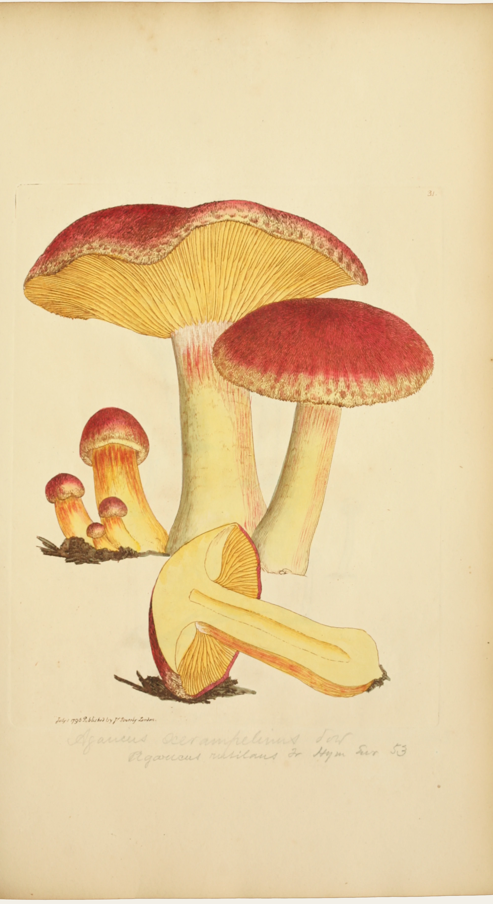

In the middle of the 1790s James Sowerby set out to do for the English toadstools what he had been doing for the English wild flowers: draw every one from life, at its natural size, and publish them in monthly numbers that anyone could afford. He was in his late thirties, trained at the Royal Academy Schools, and already the man who drew and etched the plates of English Botany. Fungi were harder. They rot in a day, they change shape as they grow, and no one in England agreed on their names. Over the next twenty years Coloured Figures of English Fungi or Mushrooms ran to four hundred and forty plates. He also made painted models of many of them, meant to help people tell the edible kinds from the poisonous.
This is plate 31, published on the first of July 1796. Sowerby called the fungus Agaricus xerampelinus, from the Greek for the colour of dry vine leaves. It is the one English foragers call plums and custard: a cap furred with fine crimson-purple scales over a yellow ground, egg-yolk gills, a stem streaked with pink, growing in tufts on the stumps of pines in late summer and autumn. He gave it the way he gave all of them, as solid things in the round: a full-grown cap tipped up to show its gills, another from above, one cut down the middle, and a knot of young buttons still in their moss.

Every copy of the plate began the same way. The drawing was bitten into copper with acid, the plate warmed and inked, its face wiped clean so that ink stayed only in the lines, and a sheet of dampened paper laid on it and run through a rolling press under great pressure. The paper was forced into every line and came away with the drawing standing a hair proud of its surface, and with the plate's edge pressed into it as a shallow step all round. That is the plate mark you can still see here, a finger's width outside the figures. At that moment the sheet held only black lines on cream: the gills already radiate, the scales on the cap are already a field of tiny flicks, because the engraving was made to carry the modelling and leave the colour to the brush.
Then the prints went to be coloured by hand, as every plate in such a book was, one sheet after another and each matched to a finished pattern copy. A flat wash of crimson went over the cap and was led up to the line, where the raised ink and the edge of the drawing held it; while it was wet it looked darker and glossier than it would dry. Then the yellow of the gills, then the pale straw of the stem and the cut flesh, and only when the washes were dry the finishing work: deeper crimson dabbed into the scales, a finer brush drawn down between the gills, pink touched into the striations of the stem, and the dark moss and needles underneath. The figures are only as round as they are because each colour stops exactly where Sowerby's line turns.
The pencil under the plate is not his. Some later owner of this copy, now in the library of the New York Botanical Garden, went through the volumes with Elias Fries's Hymenomycetes Europaei of 1874 and wrote in the name Fries used, Agaricus rutilans, with the reference “Hym. Eur. 53”. The name has changed again since. The colour has not; it is still exactly where the brush left it.